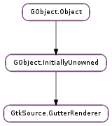

| Subclasses: | GtkSource.GutterRendererPixbuf, GtkSource.GutterRendererText |
|---|
| activate(iter, area, event) | |
| begin(cr, background_area, cell_area, start, end) | |
| draw(cr, background_area, cell_area, start, end, state) | |
| end() | |
| get_alignment() | |
| get_alignment_mode() | |
| get_background() | |
| get_padding() | |
| get_size() | |
| get_view() | |
| get_visible() | |
| get_window_type() | |
| query_activatable(iter, area, event) | |
| query_data(start, end, state) | |
| query_tooltip(iter, area, x, y, tooltip) | |
| queue_draw() | |
| set_alignment(xalign, yalign) | |
| set_alignment_mode(mode) | |
| set_background(color) | |
| set_padding(xpad, ypad) | |
| set_size(size) | |
| set_visible(visible) |
| Name | Type | Flags | Description |
|---|---|---|---|
| alignment-mode | GtkSource.GutterRendererAlignmentMode | r/w | The alignment mode |
| background-rgba | Gdk.RGBA | r/w | The background color |
| background-set | bool | r/w | Whether the background color is set |
| size | int | r/w | The size |
| view | Gtk.TextView | r | The view |
| visible | bool | r/w | Visible |
| window-type | Gtk.TextWindowType | r | The window type |
| xalign | float | r/w | The x-alignment |
| xpad | int | r/w | The x-padding |
| yalign | float | r/w | The y-alignment |
| ypad | int | r/w | The y-padding |
| Name | Parameters | Return | Description |
|---|---|---|---|
| activate | Gtk.TextIter, cairo.RectangleInt, Gdk.Event | The ::activate signal is emitted when the renderer is activated. | |
| query-activatable | Gtk.TextIter, cairo.RectangleInt, Gdk.Event | bool | The ::query-activatable signal is emitted when the renderer can possibly be activated. |
| query-data | Gtk.TextIter, Gtk.TextIter, GtkSource.GutterRendererState | The ::query-data signal is emitted when the renderer needs to be filled with data just before a cell is drawn. This can be used by general renderer implementations to allow render data to be filled in externally. | |
| query-tooltip | Gtk.TextIter, cairo.RectangleInt, int, int, Gtk.Tooltip | bool | The ::query-tooltip signal is emitted when the renderer can show a tooltip. |
| queue-draw | The ::queue-draw signal is emitted when the renderer needs to be redrawn. Use GtkSource.GutterRenderer.queue_draw () to emit this signal from an implementation of the GtkSource.GutterRenderer interface. |
| Name | Type | Access |
|---|---|---|
| parent | GObject.InitiallyUnowned | r |
Bases: GObject.InitiallyUnowned
| Parameters: |
|
|---|
The ::activate signal is emitted when the renderer is activated.
| Parameters: |
|
|---|
Called when drawing a region begins. The region to be drawn is indicated by start and end. The purpose is to allow the implementation to precompute some state before the ::draw method is called for each cell.
| Parameters: |
|
|---|
Main renderering method. Implementations should implement this method to draw onto the cairo context. The background_area indicates total area of the cell (without padding or margin) to be drawn. The cell_area indicates the area where content can be drawn (text, images, etc).
The state argument indicates the current state of the renderer and should be taken into account to properly draw the different possible states (cursor, prelit, selected) if appropriate.
Called when drawing a region of lines has ended.
| Return type: | xalign: float, yalign: float |
|---|
Get the x-alignment and y-alignment of the gutter renderer.
| Returns: | a GtkSource.GutterRendererAlignmentMode |
|---|---|
| Return type: | GtkSource.GutterRendererAlignmentMode |
Get the alignment mode. The alignment mode describes the manner in which the renderer is aligned (see :xalign and :yalign ).
| Returns: | True if the background color is set, False otherwise |
|---|---|
| Return type: | bool, color: Gdk.RGBA |
Get the background color of the renderer.
| Return type: | xpad: int, ypad: int |
|---|
Get the x-padding and y-padding of the gutter renderer.
| Returns: | a Gtk.TextView |
|---|---|
| Return type: | Gtk.TextView |
Get the view associated to the gutter renderer
| Returns: | True if the renderer is visible, False otherwise |
|---|---|
| Return type: | bool |
Get whether the gutter renderer is visible.
| Returns: | a Gtk.TextWindowType |
|---|---|
| Return type: | Gtk.TextWindowType |
Get the Gtk.TextWindowType associated with the gutter renderer.
| Parameters: |
|
|---|---|
| Returns: | |
| Return type: |
Get whether the renderer is activatable at the location in event. This is called from GtkSource.Gutter to determine whether a renderer is activatable using the mouse pointer.
| Parameters: |
|
|---|
Emit the ::query-data signal. This function is called to query for data just before rendering a cell. This is called from the GtkSource.Gutter. Implementations can override the default signal handler or can connect a signal handler externally to the ::query-data signal.
| Parameters: |
|
|---|---|
| Returns: | |
| Return type: |
Emits the ::query-tooltip signal. This function is called from GtkSource.Gutter. Implementations can override the default signal handler or can connect to the signal externally.
Emits the ::queue-draw signal of the renderer. Call this from an implementation to inform that the renderer has changed such that it needs to redraw.
| Parameters: |
|
|---|
Set the alignment of the gutter renderer. Both xalign and yalign can be -1, which means the values will not be changed (this allows changing only one of the values).
| Parameters: | mode (GtkSource.GutterRendererAlignmentMode) – a GtkSource.GutterRendererAlignmentMode |
|---|
Set the alignment mode. The alignment mode describes the manner in which the renderer is aligned (see :xalign and :yalign ).
| Parameters: | color (Gdk.RGBA or None) – a Gdk.RGBA or None |
|---|
Set the background color of the renderer. If color is set to None, the renderer will not have a background color.
| Parameters: |
|---|
Set the padding of the gutter renderer. Both xpad and ypad can be -1, which means the values will not be changed (this allows changing only one of the values).